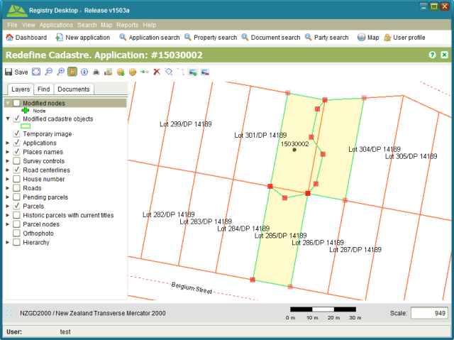

The Boundary Change tools in Redefine Cadastre work in much the same way as the Boundary
Change tools in Change to Cadastre. The main difference is that the Boundary Change tools in
Redefine Cadastre allow you to redefine the boundary of an existing parcel without having to
create a new parcel. The Select Boundary tool also automatically
selects both parcels adjacent to the selected boundary to ensure the redefined boundary is
shared by the parcels on both sides avoiding gaps and overlaps in the cadastral network.
Select Boundary tool also automatically
selects both parcels adjacent to the selected boundary to ensure the redefined boundary is
shared by the parcels on both sides avoiding gaps and overlaps in the cadastral network.

Boundary Change